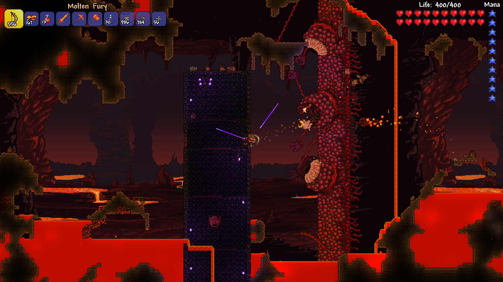
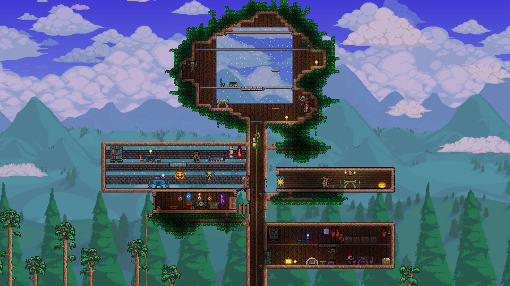
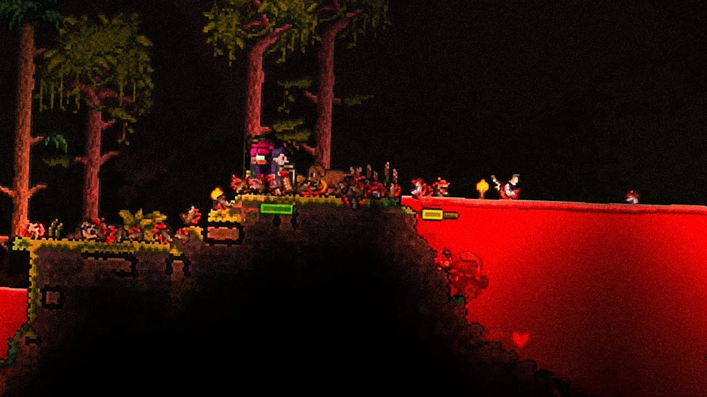
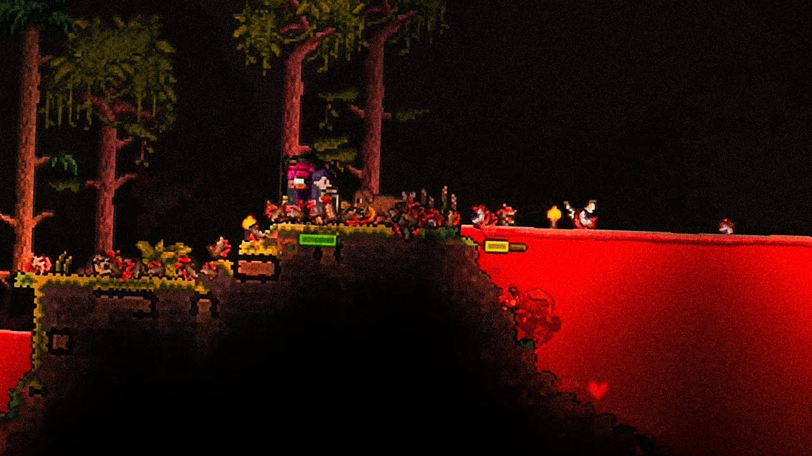

Зачем вообще этот сайт?
Этот сайт посвещен видеоигре Terraria и нужен чтобы начинающие и уже старые игроки могли узнать что-то новое или освежить знания.
Здесь есть гайды по побеждению боссов, словарь слэнга игры,
описание и сборки различных клссов от вониа до призывателя.
Что это за игра такая?
Террария - это приключенческая игра с разрушаемым открытым миром и процедурной генерацией ландшафта, чем-то она схожа с Minecraft. В этой игре вы можете сражаться с боссами, строить что угодно и исследовать огромный мир полный опасностей, что делает игру более интересной и сложной, выдавая вам каждый раз новые испытания.
 В игре доступен "режим эксперта", который повышает сложность игры, увеличивает характеристики противников и предоставляет игроку больше шансов на получение редких предметов. В обновлении Journey’s End появились два новых режима: "режим мастера" (еще более сложный) и "режим приключения" (с возможностью регулировать сложность).
В игре Terraria игрок сталкивается с разнообразными противниками в зависимости от времени суток, местоположения и случайных событий. Например, днем встречаются слизни, а ночью — зомби и демонические глаза.
 

В начале игры у персонажа есть медный короткий меч для самообороны, но в дальнейшем игрок может найти или создать разнообразное оружие: мечи, луки, огнестрельное оружие, магические книги и скипетры. На поздних этапах можно выбрать определенный класс, ориентированный на ближний бой, дальний бой, магию или призыв дружественных существ. Также в игре могут происходить события, такие как "Кровавая луна", когда появляется множество врагов. Игрок также может призывать боссов для получения редких предметов, трофеев и монет.